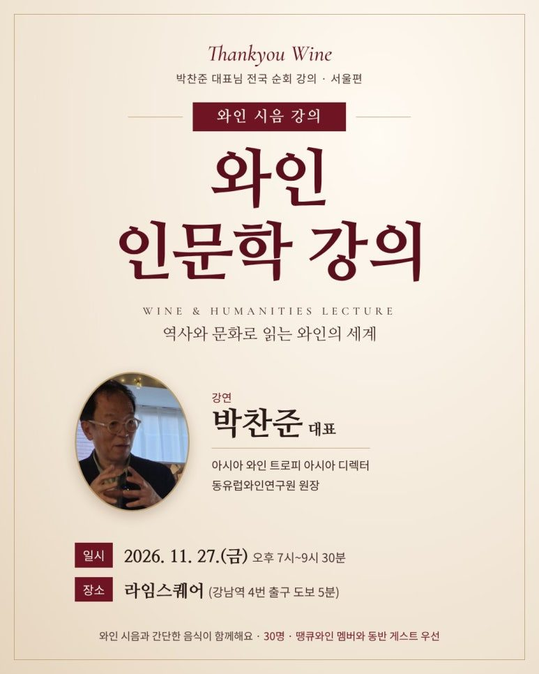
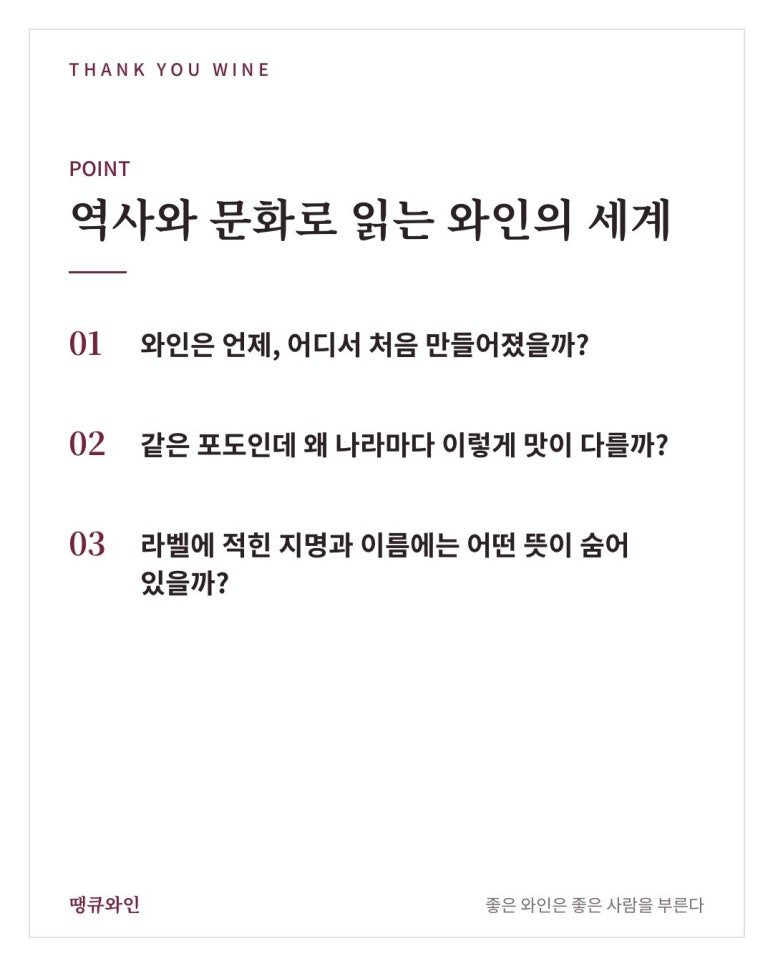
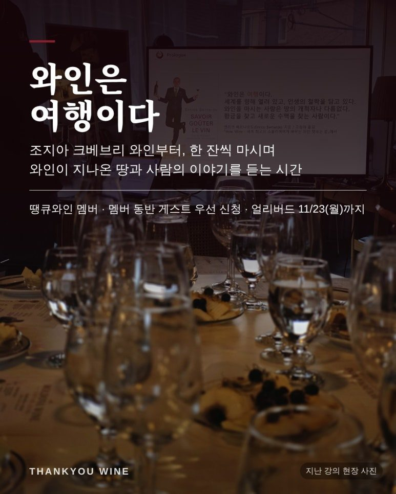
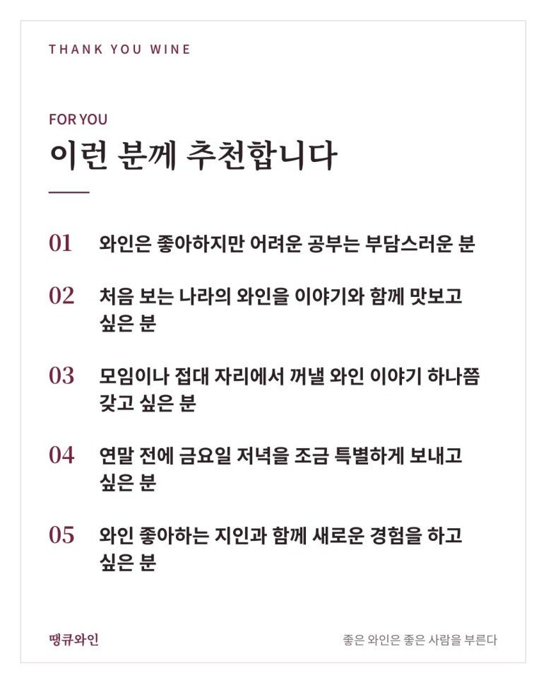
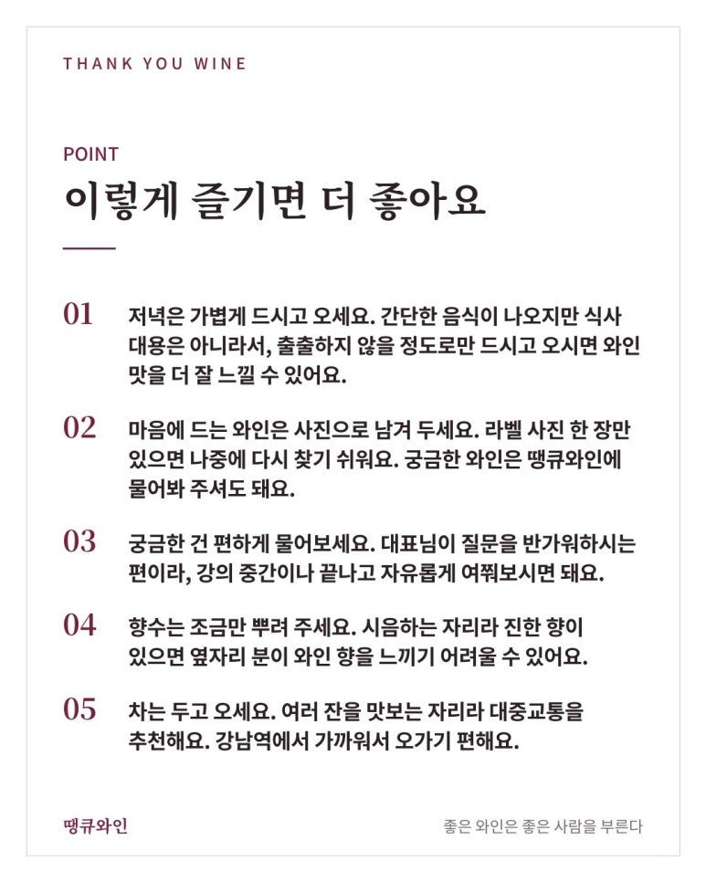

11월 27일(금) 강남역 라임스퀘어 '와인 인문학' 강의
박찬준 대표님 전국 순회 서울편, 땡큐와인
11월 27일 금요일 저녁, 땡큐와인이 준비한 '와인 인문학' 강의 장소가 정해졌어요.


11월 27일 금요일 저녁, 땡큐와인이 준비한 '와인 인문학' 강의 장소가 정해졌어요.
강남역 4번 출구에서 걸어서 5분, 라임스퀘어에서 열려요.
지난번 첫 안내 글을 보시고 "그래서 어디서 해요?", "어떻게 신청해요?" 하고 물어봐 주신 분들이 많았어요. 그래서 이번 글에는 장소와 강의 내용, 시음 와인, 신청 방법까지 한 번에 정리해 두었어요.
와인을 잘 몰라도 괜찮은 자리예요. 이야기를 듣고, 이야기 속 와인을 한 잔씩 맛보면서 편하게 보내는 금요일 저녁이에요.
한눈에 보기
- 일시
- 2026년 11월 27일(금) 오후 7시 ~ 9시 30분
- 장소
- 라임스퀘어 (강남역 4번 출구 도보 5분)
- 강연
- 박찬준 대표님 (아시아 와인 트로피 아시아 디렉터 · 동유럽와인연구원 원장)
- 구성
- 강의 + 와인 시음 + 간단한 음식
- 인원
- 30명 (땡큐와인 멤버와 멤버 동반 게스트 먼저 받아요)
- 얼리버드
- 11월 23일(월)까지 신청
- 신청서
- https://forms.gle/X5CVhg61a8VbaBsQ8
역사와 문화로 읽는 와인의 세계
와인 인문학은 와인 한 병에 담긴 역사와 문화, 그리고 그 와인을 만든 사람들의 이야기를 따라가는 강의예요.
예를 들면 이런 질문들이에요.
- 와인은 언제, 어디서 처음 만들어졌을까?
- 같은 포도인데 왜 나라마다 이렇게 맛이 다를까?
- 라벨에 적힌 지명과 이름에는 어떤 뜻이 숨어 있을까?

이런 이야기를 알고 나면 와인 한 잔을 마실 때 보이는 게 달라져요. 모임 자리에서 와인을 고를 때도, 누군가에게 와인을 선물할 때도 꺼낼 이야기가 하나씩 생기고요.
와인을 공부하는 자리가 아니라, 와인 이야기를 듣고 마시는 자리예요.

이날 맛볼 와인, 조지아 크베브리부터
이번 강의에서는 이야기에 나오는 와인을 직접 시음해요.
먼저 박찬준 대표님이 꼭 소개하고 싶다고 하신 조지아 와인 두 가지가 들어가요.
- 아네모 르카치텔리(Anemo Rkatsiteli) — 조지아 카헤티 지역의 대표 청포도 르카치텔리로 만든 화이트 와인이에요.
- 크베브리 앰버 와인 — 올해 아시아 와인 트로피에서 그랑골드를 받은 와인이에요.
조지아는 와인을 아주 오래전부터 만들어 온 나라로 알려져 있어요. 땅에 묻은 커다란 항아리 '크베브리'에 포도를 껍질째 넣어 발효하는 방식이 지금도 이어지고 있고, 이 방식은 유네스코 인류무형문화유산에도 올라 있어요. 청포도를 껍질과 함께 오래 두면 와인이 호박색을 띠는데, 그래서 '앰버 와인'이라고 불러요.
나머지 와인은 강의 흐름에 맞춰 땡큐와인에서 골라 준비해요. 처음 보는 와인이라도 이야기와 함께 마시면 훨씬 오래 기억에 남더라고요.
이런 분께 추천해요
- 와인은 좋아하지만 어려운 공부는 부담스러운 분
- 처음 보는 나라의 와인을 이야기와 함께 맛보고 싶은 분
- 모임이나 접대 자리에서 꺼낼 와인 이야기 하나쯤 갖고 싶은 분
- 연말 전에 금요일 저녁을 조금 특별하게 보내고 싶은 분
- 와인 좋아하는 지인과 함께 새로운 경험을 하고 싶은 분

혼자 오셔도 괜찮아요. 와인을 좋아하는 분들이 모이는 자리라 처음 만난 분들과도 이야기가 금방 이어져요.
지난 강의는 어땠을까?
땡큐와인이 지난번 박찬준 대표님과 함께한 자리는 몰도바 와인 이야기였어요.
화면에 유럽 지도를 띄워 놓고 몰도바가 어디에 있는지, 왜 그 땅에서 와인이 오래 만들어졌는지부터 차근차근 이야기해 주셨어요. 그다음 그 이야기에 나온 와인을 한 잔씩 따라 마시니까, 처음 듣는 나라의 와인인데도 "아, 그래서 이런 맛이구나" 하고 고개를 끄덕이게 되더라고요.
강의가 끝나고 나서도 와인 이름보다 그 와인에 얽힌 이야기가 더 오래 기억에 남았다는 분이 많았어요. 이번 강의도 그런 저녁이 될 거예요.
이렇게 즐기면 더 좋아요
처음 오시는 분들이 많아서, 조금 더 편하게 즐기실 수 있는 방법을 적어 둘게요.
- 저녁은 가볍게 드시고 오세요. 간단한 음식이 나오지만 식사 대용은 아니라서, 출출하지 않을 정도로만 드시고 오시면 와인 맛을 더 잘 느낄 수 있어요.
- 마음에 드는 와인은 사진으로 남겨 두세요. 라벨 사진 한 장만 있으면 나중에 다시 찾기 쉬워요. 궁금한 와인은 땡큐와인에 물어봐 주셔도 돼요.
- 궁금한 건 편하게 물어보세요. 대표님이 질문을 반가워하시는 편이라, 강의 중간이나 끝나고 자유롭게 여쭤보시면 돼요.
- 향수는 조금만 뿌려 주세요. 시음하는 자리라 진한 향이 있으면 옆자리 분이 와인 향을 느끼기 어려울 수 있어요.
- 차는 두고 오세요. 여러 잔을 맛보는 자리라 대중교통을 추천해요. 강남역에서 가까워서 오가기 편해요.

신청 방법
신청은 아주 간단해요.
1. 아래 링크를 클릭해 신청서를 작성해주세요.
https://forms.gle/X5CVhg61a8VbaBsQ8
2. 안내받은 계좌로 입금해 주세요.
신청서 링크에 안내되어있어요.
3. 입금이 확인되면 자리가 확정돼요.
함께 오시는 분이 있으면 같이 신청해 주세요.
30명이 차면 마감이고, 땡큐와인 멤버와 멤버 동반 게스트 신청을 먼저 받고 있어요.
자주 묻는 질문
Q. 와인을 잘 몰라도 괜찮을까요?
A. 네, 괜찮아요. 와인 지식이 없어도 따라올 수 있게 이야기 중심으로 진행돼요.
Q. 혼자 가도 어색하지 않을까요?
A. 혼자 오시는 분도 많아요. 시음하면서 자연스럽게 옆자리 분과 이야기를 나누게 돼요.
Q. 저녁 식사가 되나요?
A. 와인과 어울리는 간단한 음식이 함께 나와요. 든든한 식사는 아니니 가볍게 드시고 오시는 걸 추천해요.
Q. 장소는 찾기 쉬운가요?
A. 강남역 4번 출구에서 걸어서 5분 거리예요. 신청하신 분께는 정확한 위치를 따로 한 번 더 보내 드려요. 와인 한 잔에 담긴 땅과 사람의 이야기를 들으면서, 한 해를 조금 여유 있게 마무리해 보셨으면 해요. 얼리버드는 11월 23일(월)까지예요. 신청서 👉 https://forms.gle/X5CVhg61a8VbaBsQ8 궁금한 점은 언제든 편하게 카톡이나 문자로 물어봐 주세요. 함께 오고 싶은 분이 떠오르신다면 이 글을 그대로 전해 주셔도 좋아요. 11월 27일 금요일 저녁, 강남역 라임스퀘어에서 뵐게요.
이 글은 땡큐와인 네이버 블로그에 먼저 올린 글이에요.